About
ReviewAid is an open-source AI-driven tool designed to streamline full-text screening and data extraction phases of systematic reviews. It leverages advanced large language models to classify papers based on PICO criteria and extract custom data fields, drastically reducing the manual workload for researchers.
Why did I make this?
I built ReviewAid to act as an assistant for Researchers especially those involved in Evidence synthesis. The idea was simple, manual work will be never be replaced but more likely will be aided by this tool. Researchers can manually do the work and then check their accuracy by such a tool so as to not miss any potential important papers. Thus, acting as an "Aid". ReviewAid.
Interface Previews
User Interface
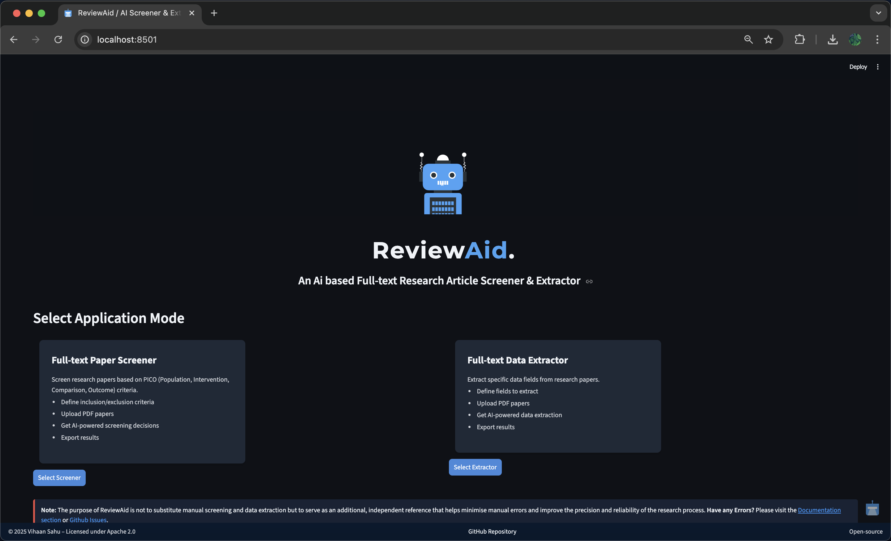
Screener
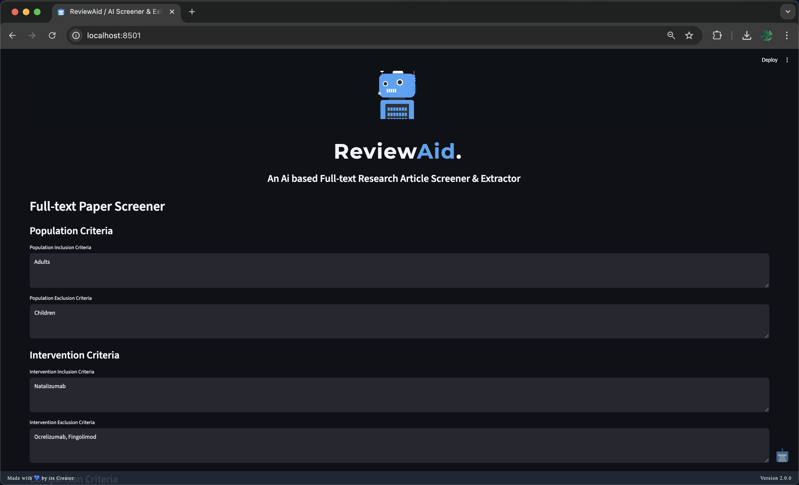


Extractor

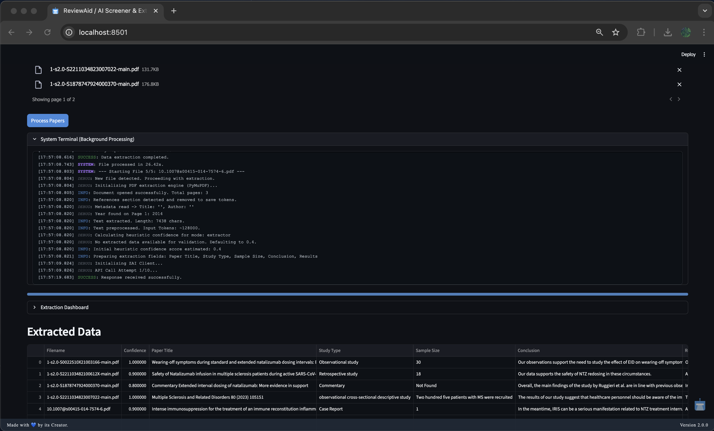
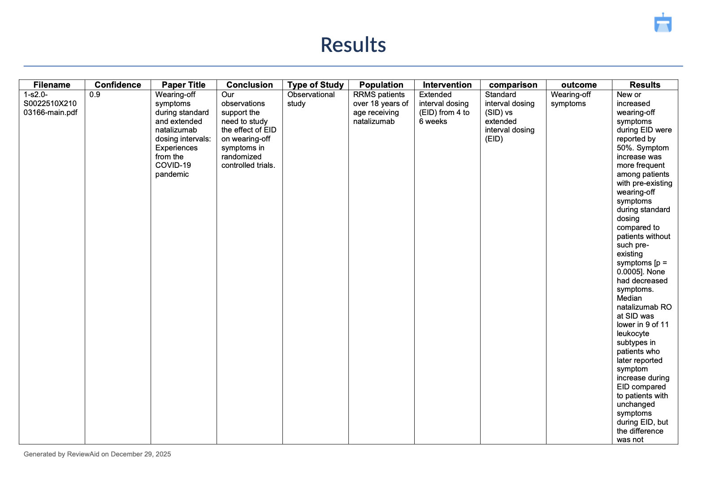

Additional Views
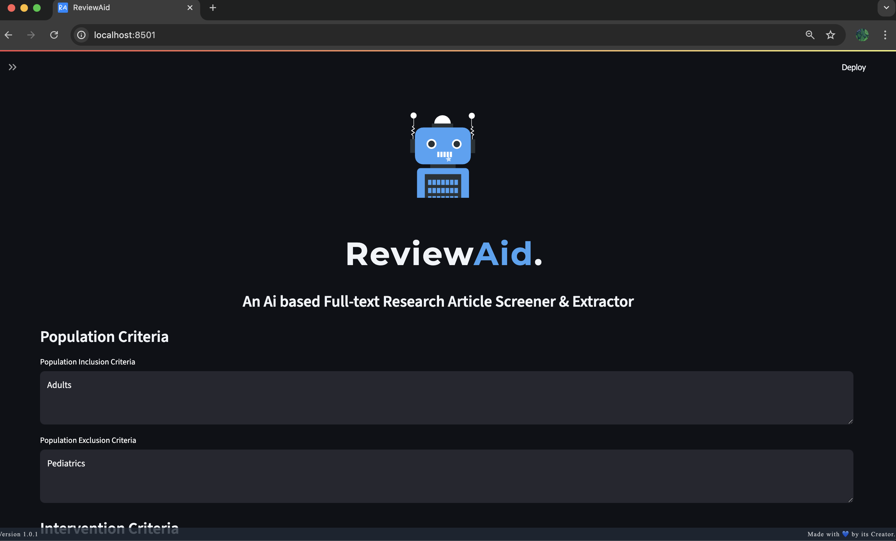
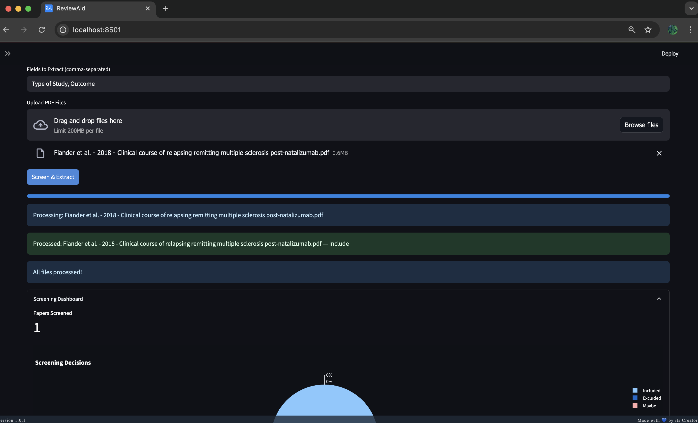
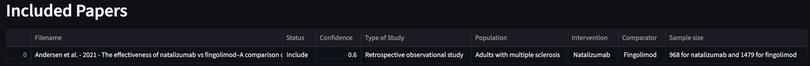

System Architecture Layers
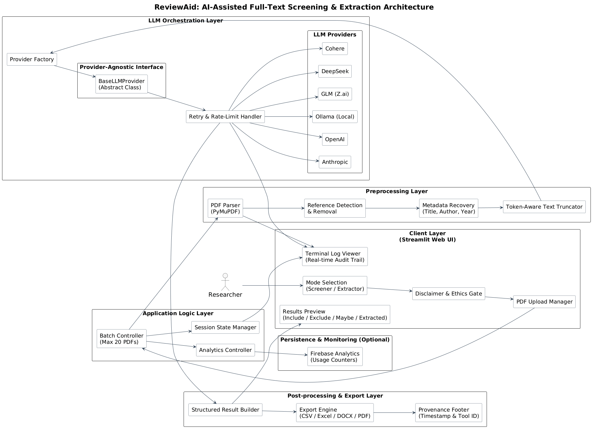
Confidence Scoring System
This system implements a hierarchical four-tier confidence model designed to maximize precision and minimize false classifications during automated paper screening and data extraction. The logic prioritizes deterministic rule-based decisions before progressively falling back to algorithmic and heuristic estimation only when necessary.
Overview
The confidence score reflects how reliably a paper has been classified or extracted. Scores range from 0.0 to 1.0, where higher values indicate stronger certainty and lower values explicitly flag the need for manual review.
The system operates in the following order:
- Deterministic Rule-Based Classification (For Screener)
- LLM Self-Assessment (Extractor starts directly from Tier 2)
- Heuristic Keyword Estimation
- Low-Confidence Default
Each tier is only activated if the previous tier fails to produce a valid and reliable result.
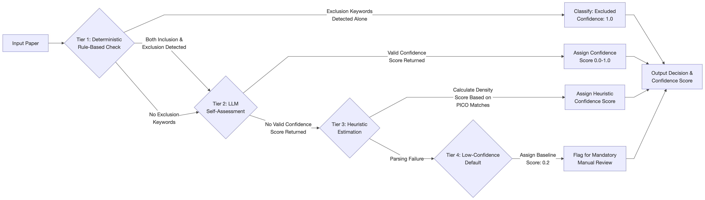
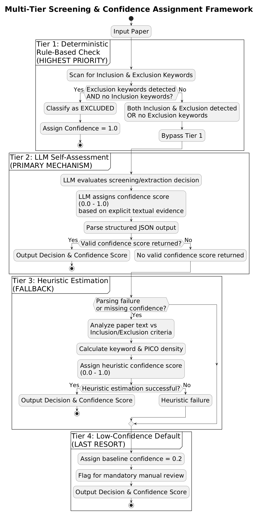
Tier 1: Deterministic Rule-Based
Highest Priority
Purpose: Eliminate ambiguity using explicit user-defined rules.
Logic:
- The system performs a preliminary scan for exclusion and inclusion keywords.
- If exclusion keywords are detected without any corresponding inclusion keywords, the paper is automatically classified as Excluded with a confidence score of 1.0 (100%).
- If both exclusion and inclusion keywords are present, this tier is bypassed to avoid false positives, delegating the decision to the AI.
Tier 2: LLM Self-Assessment
Primary Mechanism
Purpose: Leverage the model’s internal reasoning and evidence-based judgment.
Logic:
- The Large Language Model (LLM) is explicitly instructed to evaluate its own screening or extraction decision.
- It assigns a confidence score between 0.0 and 1.0.
- The score is based strictly on explicit textual evidence found in the paper.
- The confidence value is parsed directly from the model’s structured JSON output.
Tier 3: Heuristic Estimation
Fallback
Purpose: Provide a probabilistic estimate when LLM confidence is unavailable.
Triggered when: The LLM fails to return a valid confidence value (e.g., formatting or JSON parsing errors).
Screener Logic:
- The system analyzes the users input Inclusions and Exclusions critiera and matches with the paper's full-text and determines the confidence level.
Extractor Logic:
- The system analyzes Extracted data with the paper's full-text and determines the confidence level.
Tier 4: Low-Confidence Default
Last Resort
Purpose: Explicitly flag unreliable outputs.
Triggered when: Data extraction fails entirely (e.g., Regex failure or missing sections).
Logic:
- Assigns a baseline low confidence score (e.g.,
0.2). - Automatically flags the result for mandatory manual review.
Confidence Score Interpretation
This layered approach ensures that high-confidence decisions are automated safely, while ambiguous or unreliable cases are clearly flagged for human oversight.
| Confidence Score | Classification | Description | Implication |
|---|---|---|---|
| 1.0 (100%) | Definitive Match | Deterministic rule-based classification / No ambiguity. | Fully automated decision |
| 0.8 – 1.0 | Very High | AI strongly validates the decision using explicit textual evidence. | Safe to accept |
| 0.6 – 0.79 | High | Criteria appear satisfied based on standard academic structure and content. | Review optional |
| 0.4 – 0.59 | Moderate | Ambiguous context or loosely met criteria. | Manual verification recommended |
| 0.1 – 0.39 | Low | Based mainly on heuristic keyword estimation. | High risk of error |
| < 0.1 | Unreliable | Derived from fallback or failed extraction methods. | Mandatory manual review |
Bulletproof Parsing Pipeline
Purpose: Safely parse API/AI responses, even if the JSON is broken or missing.
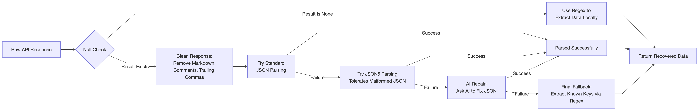
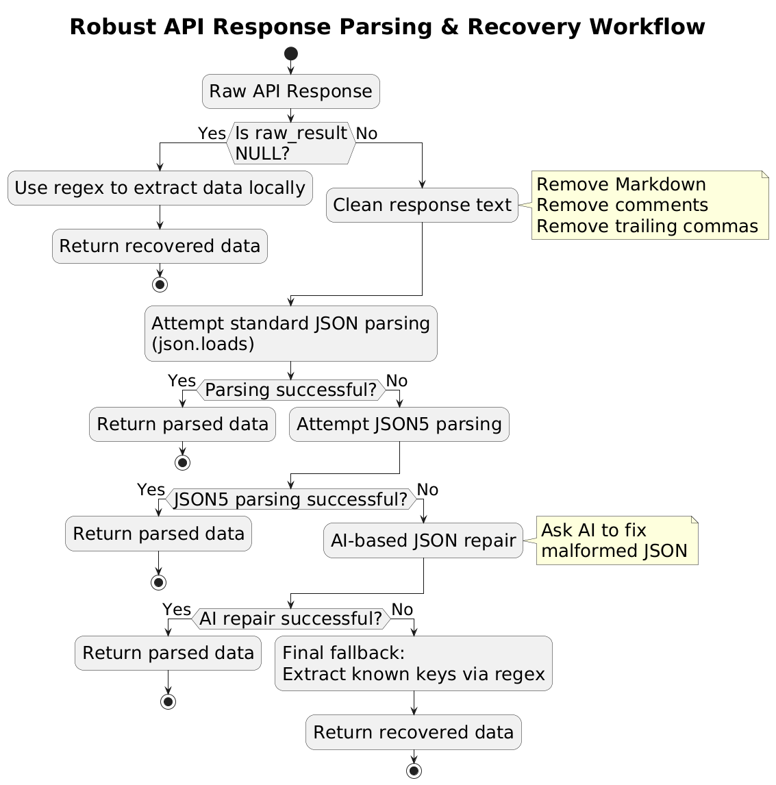
Flow
- If
raw_resultisNone
→ Use regex to extract data locally. - Clean the response
→ Remove Markdown, comments, and trailing commas. - Try standard JSON parsing
→json.loads - If that fails, try JSON5
→ Handles loose / malformed JSON. - If that fails, use AI repair
→ Ask AI to fix the JSON. - Final fallback
→ Extract known keys using regex.
Guarantee
- Never crashes
- Always attempts to recover usable data
OCR – Advanced Image Data Extraction
The system uses Optical Character Recognition (OCR) to extract structured data from images before parsing. It was initially built using PaddleOCR for higher accuracy and better handling of complex layouts, noisy images, and multi-line text. However, due to streamlit deployment constraints, it now uses pytesseract (Google Tesseract-OCR wrapper) as the default OCR engine.
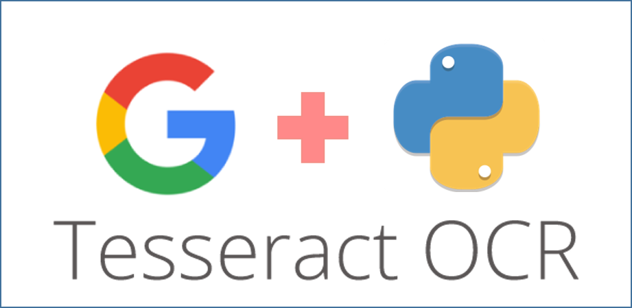
ReviewAid PaddleOCR version (run with streamlit locally): ReviewAid-OCR
Official Tesseract wrapper: pytesseract GitHub
Usage & Installation
Follow these instructions to run ReviewAid online or locally.
⚡ Usage (Online)
-
Launch Online Streamlit hosted web app
Access the application directly from your browser without installation. -
Select Mode:
- Full-text Paper Screener: Choose this mode to screen papers based on PICO (Population, Intervention, Comparison, Outcome) criteria.
- Full-text Data Extractor: Choose this mode to extract specific fields (Author, Year, Conclusion, etc.) from research papers.
-
Workflow (Screener):
- Enter your PICO criteria (Inclusion/Exclusion) in the input fields.
- Upload your PDF papers (Batch upload supported).
- Click "Screen Papers".
- Monitor the "System Terminal" for real-time logs of extraction, API calls, and processing status.
- View the "Screening Dashboard" for a pie chart of Included/Excluded/Maybe decisions.
- Download results as CSV, XLSX, or DOCX.
-
Workflow (Extractor):
- Enter the fields you want to extract (comma-separated).
- Upload your PDF papers.
- Click "Process Papers".
- Monitor the "System Terminal" for logs.
- View extracted data in the dashboard.
- Download extracted data as CSV, XLSX, or DOCX.
-
Configuration:
- For using API key, you can select the respective AI model in either Screener/Extractor.
⚡ Usage (run streamlit Locally)
To run ReviewAid locally with your own API keys (OpenAI, DeepSeek, etc.), follow these steps:
-
Clone the repository
git clone https://github.com/aurumz-rgb/ReviewAid.git
cd ReviewAid -
Create and activate a virtual environment (recommended)
python -m venv venv
source venv/bin/activate# macOS / Linux
venv\Scripts\activate# Windows -
Install dependencies
pip install -r requirements.txt -
Start the Streamlit application
streamlit run app.py -
Configure Ai model along with API key inside the UI
- Select AI model as the provider
- Enter your API Key
🖥️ Running ReviewAid Locally with Ollama (No API Key Required)
ReviewAid supports local inference using Ollama, allowing you to run the application without any external API keys. This is ideal for users who prefer offline usage, enhanced privacy, or full local control.
Prerequisites
Ensure the following are installed on your system:
- Python 3.12+
- Ollama (installed and running locally)
- Download: https://ollama.com
- At least one supported Ollama model (e.g.,
llama3)
Pull a model (example):
ollama pull llama3
Verify Ollama is running:
ollama list
▶️ Running ReviewAid with Ollama
-
Clone the repository
git clone https://github.com/aurumz-rgb/ReviewAid.git
cd ReviewAid -
Create and activate a virtual environment (recommended)
python -m venv venv
source venv/bin/activate# macOS / Linux
venv\Scripts\activate# Windows -
Install dependencies
pip install -r requirements.txt -
Start the Streamlit application
streamlit run app.py -
Configure Ollama inside the UI
- Select Ollama (Local) as the provider
- Choose a local model (e.g.,
llama3) - No API key is required
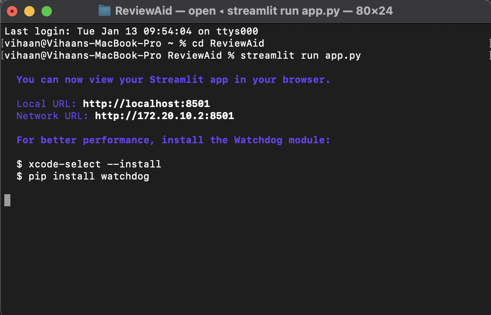
Privacy Advantage
When using Ollama:
- All inference runs entirely on your local machine
- No data is sent to external servers
- No API keys are required or stored
This makes Ollama the most privacy-preserving configuration supported by ReviewAid.
- Performance depends on your local hardware (CPU/GPU/RAM)
- Large PDFs or batch sizes may take longer on CPU-only systems
- For best results, ensure Ollama is running before launching Streamlit
Workflow Diagrams
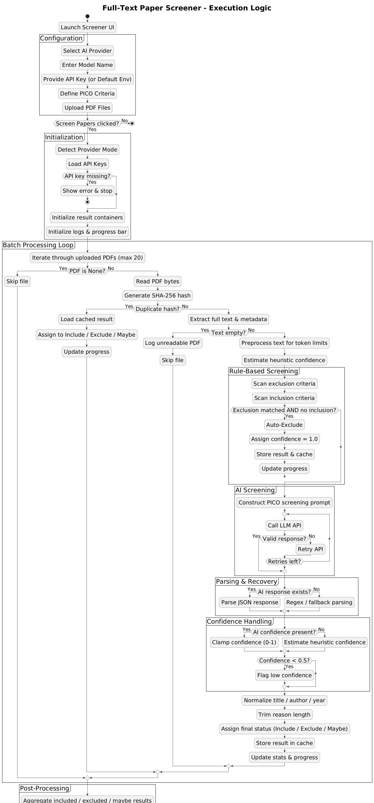
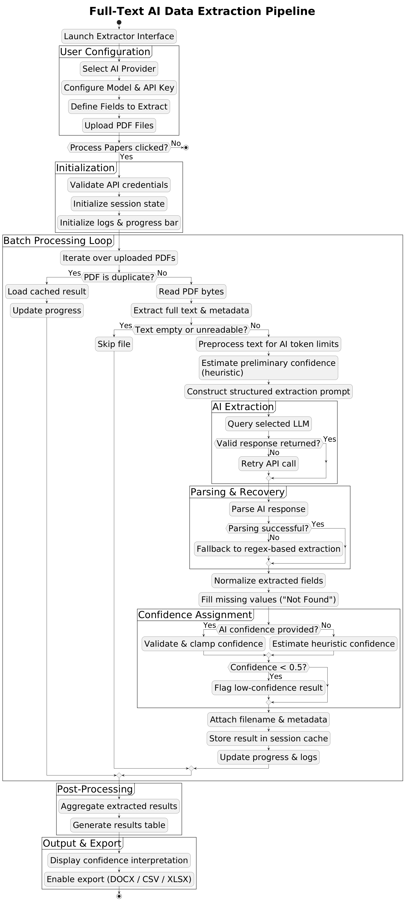
Errors
While ReviewAid is designed to be robust and self-healing, you may encounter certain behaviors during operation. Below is an explanation of common scenarios and their fixes.
API limit error (Rate/Quota exceeded)
MeaningThe API sometimes does this when since it throttles with too many requests at the time.
FixNo need to worry, the code is written in such a way that the tool will retry 3 times and if not, it will send a brand new API request for the paper.
'Not found' for extracting domains like "Intervention_Mean, Intervention_SD"
MeaningThe AI is unfortunately not a researcher and as such is unable to know the
abbreviations meaning. As a result, the AI doesnt know what to extract. as seen in below image
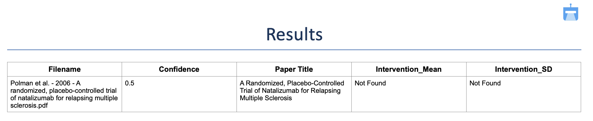
FixYou can extract such domains by simply expanding such abbreviations in the Extractor
field. (Example: Intervention_Mean: mean value of the continuous outcome in the intervention group,
Intervention_SD: standard deviation of the outcome in the intervention group). As seen in the below image
for the same paper.

Empty JSON
MeaningIrrespective of building a really good json parser, sometimes the parser might fail because the json itself is empty.
FixNo need to do anything, the code will fetch another API request for the same paper to get a valid json.
All domains to be extracted shown as 'Not Found' (Extractor)
MeaningIf it was 1 or 2 domains, it is understandable that the paper might geniunely lack the information. however if all the domains for a paper show 'Not found', please do process the paper seperately in the extractor.
FixPlease do process the paper separately in the extractor.
Abrupt Stopping
MeaningStreamlit abruptly stops in order to conserve its resources and hence the user should follow our request to upload a maximum of 20 papers in one time.
FixHowever, if issue persists for papers below this number in one session, please do open an issue on Github.
Empty API Response
MeaningThe AI mighty sometimes throttle and might return no response.
FixNo need to worry, the code will handle this by waiting for 15,20,60 seconds per retry. I would request the users to check the terminal processing.
skipping file (NOT AN ERROR)
MeaningFile like .docx / html etc are not supported. As a result, the parser won't be able to read and such skips the file. If it is skipping the pdf, it could most likely be that the file is corrupt.
FixEnsure the file is a valid PDF and not corrupt.
Configuration


ReviewAid also supports configuration of OpenAI, Claude, Deepseek, Cohere, Z.ai and Ollama (locally) via API key as well. To protect your privacy, API keys are not stored at any time.
For the tested tasks, the following models were successful:
OpenAI – GPT-4o
Deepseek – deepseek-chat
Cohere – command-a-03-2025
Z.AI – GLM-4.6V-Flash, GLM-4.5V-Flash, GLM-4.7-Flash
Anthropic – Claude-Sonnet-4-20250514
Ollama (local) – Llama3
Default – GLM-4.5-Flash, GLM-4.6V-Flash, GLM-4.7-Flash
You can also seamlessly switch between multiple available AI models within the default setup itself, without the need for any API key.
Acknowledgements
I gratefully acknowledge developers of GLM (Z.ai) for providing the AI model used in ReviewAid.
For more information, please see GLM paper and GLM Hugging Face.
I would also like to thank Mohith Balakrishnan for his thorough validation of ReviewAid, including batch testing, error checks, and confidence verification, which significantly improved the tool’s reliability and accuracy.
Z.ai GitHub: zai-org.
Citation
If you use ReviewAid in your research, please cite it using the following format:
For ReviewAid's preprint paper, please check ReviewAid MetaArXiV.